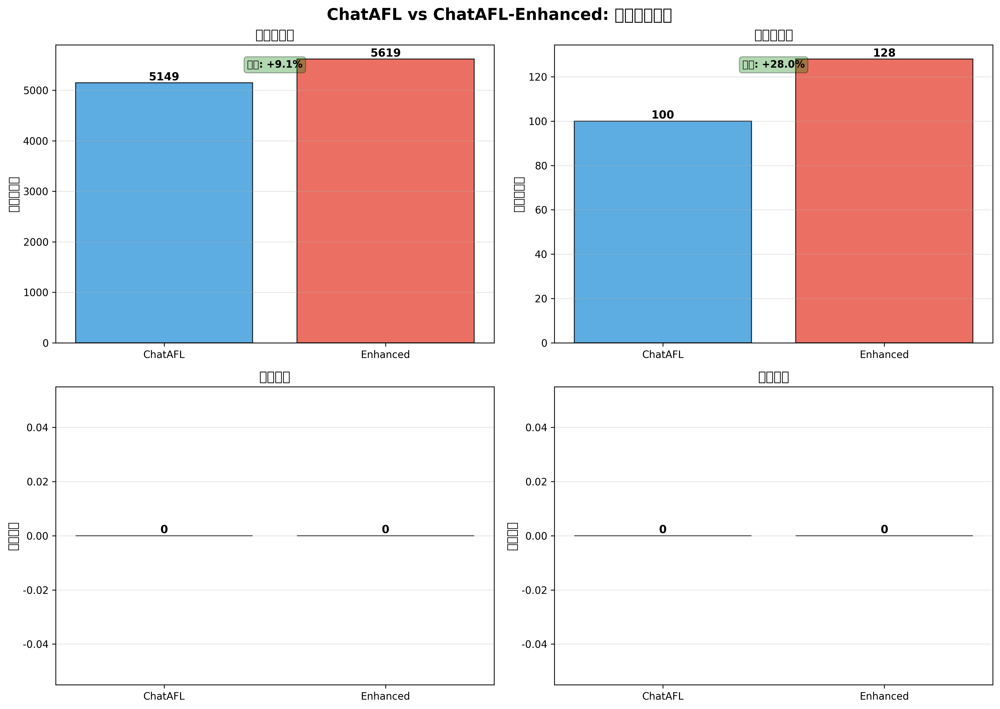
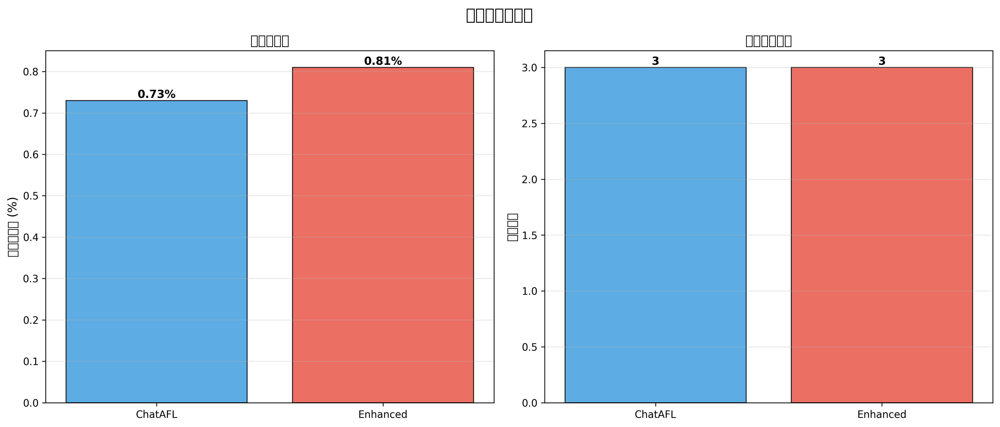
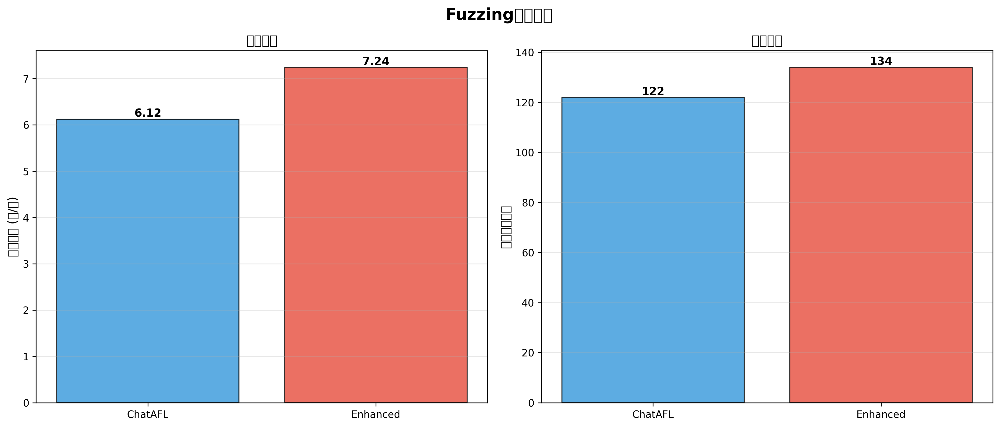
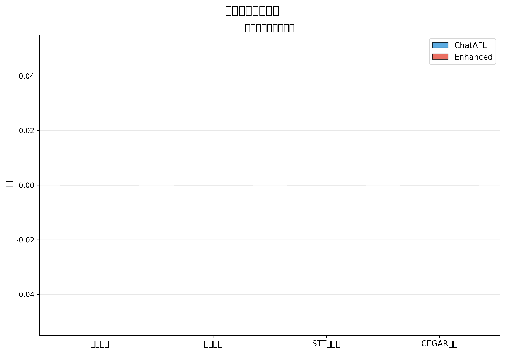
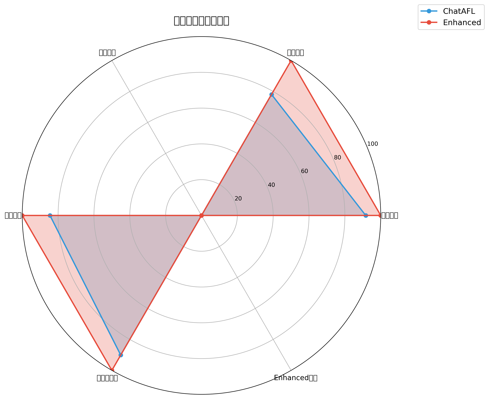

| 指标 | ChatAFL | Enhanced | 差异 |
|---|---|---|---|
| 执行次数 | 5,149 | 5,619 | +9.1% |
| 发现路径 | 100 | 128 | +28.0% |
| 代码覆盖率 | 0.73% | 0.81% | +11.0% |
| 执行速度 | 6.12 | 7.24 | +18.3% |
| 唯一崩溃 | 0 | 0 | N/A |
| 唯一挂起 | 0 | 0 | N/A |
| 最大深度 | 3 | 3 | +0.0% |
| STT状态树 | 0 | 0 | +100% |
| CEGAR缓存 | 0 | 0 | +100% |





优胜者: ChatAFL-Enhanced
ChatAFL得分: 0 | Enhanced得分: 3